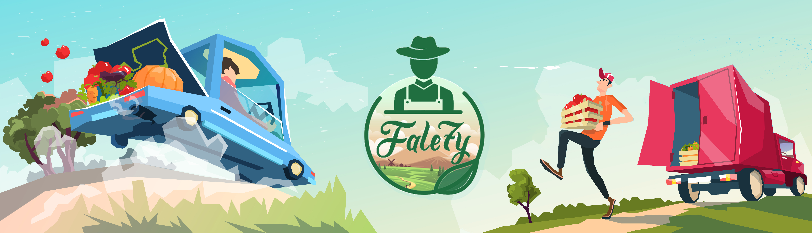

<!-- ***** Header Area End ***** -->

<!-- ***** Welcome Area Start ***** -->

  <!-- ***** Blog End ***** -->
  
  <!-- ***** Contact Us Start ***** -->
  <section class="section colored" id="contact-us">
    <div class="container" style="min-height: calc(100vh - 400px);margin-top: 35px;">
      <!-- ***** Section Title Start ***** -->
      <div class="row">
        <div class="col-lg-12">
          <div class="center-heading">
            <div class="row">
               
            </div>
            <h2 class="section-title">À propos de Fale7y </h2>
          </div>
        </div>
        <div class="offset-lg-3 col-lg-6">
        </div>
      </div>
      <!-- ***** Section Title End ***** -->
  
      <div class="row">
        <!-- ***** Contact Text Start ***** -->
        <div class="col-lg-4 col-md-6 col-sm-12">
          <h5 class="margin-bottom-30">Nos contacts</h5>
          <div class="contact-text">
            <p>
              Email: Contact.fale7y.tn@gmail.com
              <br />Numéro De Téléphone: +216 55309978
            </p>
            
          </div>
        </div>
        <!-- ***** Contact Text End ***** -->
  
        <!-- ***** Contact Form Start ***** -->
        <div class="col-lg-8 col-md-6 col-sm-12">
            <div class="left-text">
                <p>
                    Afin d'améliorer les circonstances de travail des petits agricoles,  de revolutionner l'agriculture, d'atténuer l'inflation des prix de légumes et fruits et d'aider les  âgés à faire leurs courses dans les conditions les plus favorables.
                </p>
                <p>
                  Les jeunes d'Enactus Iset Rades, des étudiants passionnés par l'entrepreneuriat social, des créateurs de changement et des   futurs leaders  entreprenants et responsables réalisent le projet  "fale7y".
                </p>
                <p>
                  « Fale7y » est une plate-forme, simple et efficace qui permet d'établir une relation entre les agriculteurs et les consommateurs dans le but de réaliser de bonnes affaires pour leurs besoins quotidiens et mensuels en fruits et légumes frais.
                </p>
              </div>
        </div>
        <!-- ***** Contact Form End ***** -->
      </div>
    </div>
  </section>
  <!-- ***** Contact Us End ***** -->
  
  <!-- ***** Footer Start ***** -->
  
